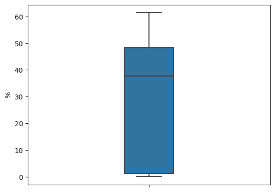

The median is the middle value in a data set when the values are ordered from smallest to largest. If there is an even number of values, the median is the average of the two middle values.
The variance is a measure of how spread out the values in a data set are. It is calculated by taking the average of the squared differences between each value and the mean.
where \(x_i\) is the \(i\)-th value in the data set, $ $ is the mean of the data set, \(n\) is the number of values, and $ $ is the standard deviation of the data set.
Similarly, we can use the .max() and .min() methods to compute the maximum and minimum values of a Series or DataFrame.
elections['%'].max(), elections['%'].min()
(61.34470329, 0.098088334)
The .sum() method computes the sum of all the values in a Series or DataFrame.
The .describe() method computes summary statistics for a Series or DataFrame. It computes the mean, standard deviation, minimum, maximum, and the quantiles of the data.
elections['%'].describe()
count 182.000000
mean 27.470350
std 22.968034
min 0.098088
25% 1.219996
50% 37.677893
75% 48.354977
max 61.344703
Name: %, dtype: float64
elections.describe()
Year
Popular vote
%
count
182.000000
1.820000e+02
182.000000
mean
1934.087912
1.235364e+07
27.470350
std
57.048908
1.907715e+07
22.968034
min
1824.000000
1.007150e+05
0.098088
25%
1889.000000
3.876395e+05
1.219996
50%
1936.000000
1.709375e+06
37.677893
75%
1988.000000
1.897775e+07
48.354977
max
2020.000000
8.126892e+07
61.344703
.describe()
If many statistics are required from a DataFrame (minimum value, maximum value, mean value, etc.), then .describe() can be used to compute all of them at once.
elections.describe()
Year
Popular vote
%
count
182.000000
1.820000e+02
182.000000
mean
1934.087912
1.235364e+07
27.470350
std
57.048908
1.907715e+07
22.968034
min
1824.000000
1.007150e+05
0.098088
25%
1889.000000
3.876395e+05
1.219996
50%
1936.000000
1.709375e+06
37.677893
75%
1988.000000
1.897775e+07
48.354977
max
2020.000000
8.126892e+07
61.344703
A different set of statistics will be reported if .describe() is called on a Series.
where \(x_i\) and \(y_i\) are the \(i\)-th values of the two variables, $ _x$ and $ _y$ are the means of the two variables, and \(n\) is the number of values.
The covariance can be positive, negative, or zero. A positive covariance indicates that the two variables tend to increase or decrease together, while a negative covariance indicates that one variable tends to increase as the other decreases.
Correlations
Correlation is a statistical measure that describes the relationship between two variables. It can be positive, negative, or zero.
Positive correlation: If one variable increases, the other variable also increases.
Negative correlation: If one variable increases, the other variable decreases.
Zero correlation: There is no relationship between the two variables.
The correlation coefficient ranges from -1 to 1. A value of 1 indicates a perfect positive correlation, a value of -1 indicates a perfect negative correlation, and a value of 0 indicates no correlation.
There are several methods to compute the correlation between two variables. The two most common methods are the Pearson correlation coefficient and the Spearman correlation
Pearson Correlation Coefficient
The Pearson correlation coefficient measures the linear relationship between two variables. It ranges from -1 to 1.
where \(x_i\) and \(y_i\) are the \(i\)-th values of the two variables, $ _x$ and $ _y$ are the means of the two variables, and \(n\) is the number of values.
where \(d_i\) is the difference between the ranks of the two variables and \(n\) is the number of values.
x.corr(y, method='spearman')
0.7432486904455022
.corr()
The .corr() method computes the correlation between columns in a DataFrame. By default, it computes the Pearson correlation coefficient, but the method parameter can be used to specify the method to use.
Percentile and Quantile
Percentiles and quantiles are measures of position in a data set. They divide the data set into equal parts.
Percentile
A percentile is a value below which a given percentage of the data falls. For example, the 25th percentile is the value below which 25% of the data falls.
Quantile
A quantile is a value below which a given fraction of the data falls. For example, the 0.25 quantile is the value below which 25% of the data falls.
The .quantile() method can be used to compute the quantiles of a Series or DataFrame.
elections.quantile(0.25)
Year 1889.000000
Popular vote 387639.500000
% 1.219996
Name: 0.25, dtype: float64
Box Plots
Box plots display distributions using information about quartiles.
A quartile represents a 25% portion of the data. We say that:
The first quartile (Q1) repesents the 25th percentile – 25% of the data lies below the first quartile
The second quartile (Q2) represents the 50th percentile, also known as the median – 50% of the data lies below the second quartile
The third quartile (Q3) represents the 75th percentile – 75% of the data lies below the third quartile.
In a box plot, the lower extent of the box lies at Q1, while the upper extent of the box lies at Q3. The horizontal line in the middle of the box corresponds to Q2 (equivalently, the median).
The Inter-Quartile Range (IQR) measures the spread of the middle % of the distribution, calculated as the (\(3^{rd}\) Quartile \(-\)\(1^{st}\) Quartile).
The whiskers of a box-plot are the two points that lie at the [\(1^{st}\) Quartile \(-\)(\(1.5 \times\) IQR)], and the [\(3^{rd}\) Quartile \(+\) (\(1.5 \times\) IQR)]. They are the lower and upper ranges of “normal” data (the points excluding outliers). Subsequently, the outliers are the data points that fall beyond the whiskers, or further than ( \(1.5 \times\) IQR) from the extreme quartiles.
import seaborn as snssns.boxplot(data=elections, y='%', hue='Result', width=0.2);

ax = sns.boxplot(data = elections, y ='%', x="Result", width=0.2);